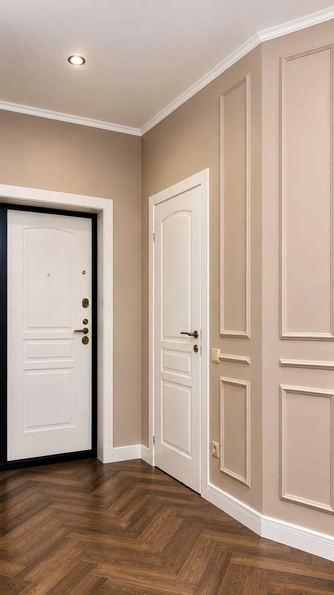
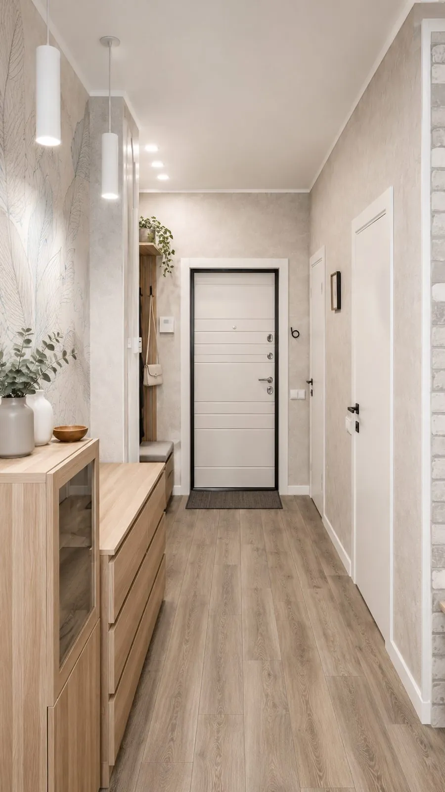
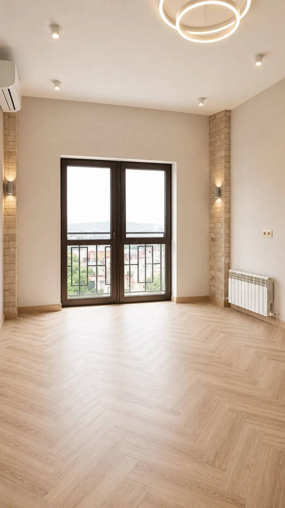
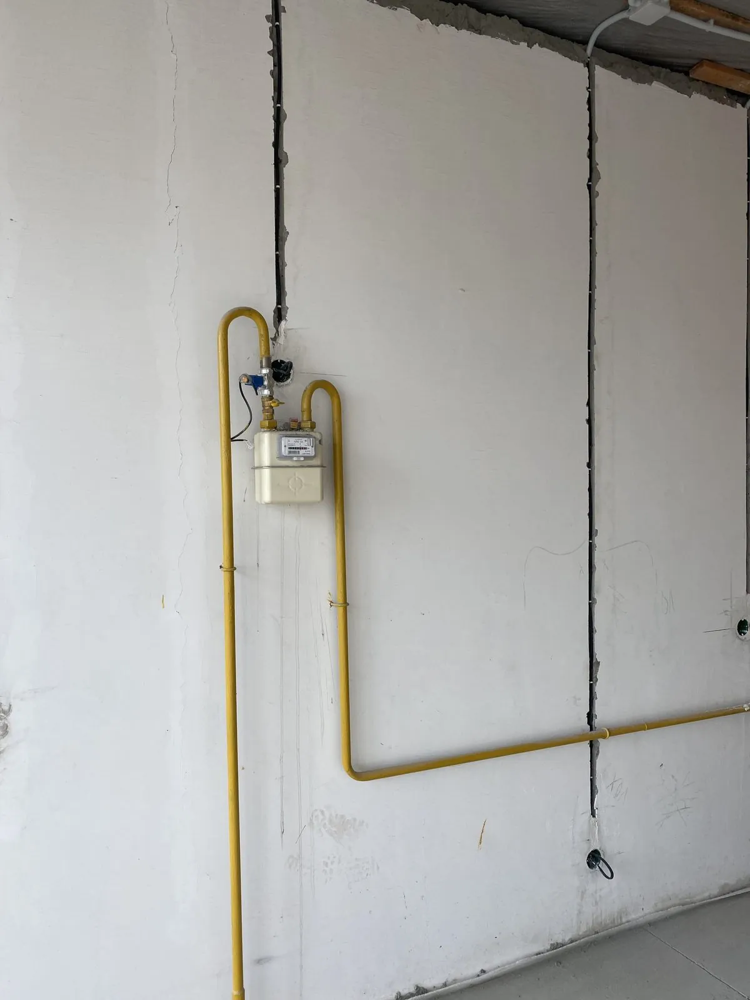

Сантехнические работы в Широкой Щели
Закажите «сантехнические работы» в в Широкой Щели — RemontPro ведёт объект как управляемый проект: фиксируем стоимость, согласуем график этапов и держим вас в курсе на каждом шаге, даже если вы в другом городе.




Что входит
- Бесплатный выезд замерщика и расчёт сметы
- Договор с фиксированной стоимостью и сроком
- Закупка материалов по оптовым ценам
- Фотоотчёты по каждому этапу работ
- Поэтапная оплата за принятые работы
- Гарантия на работы до 3 лет
Цены — ориентир
Точная цена — после бесплатного замера в Широкой Щели.
Вызвать замерщикаКак мы работаем
Замер и смета
Выезжаем на объект, снимаем размеры, считаем смету и сроки.
Договор
Фиксируем стоимость, объём и график этапов в договоре.
Работы и отчёты
Ведём ремонт, присылаем фотоотчёты, контролируем качество.
Сдача
Финальная приёмка, уборка и гарантия.
«Спасибо за сантехнические работы в в Широкой Щели: понятный график, честные материалы, результат как на дизайн-проекте.» — Марина и Олег, Геленджик
Частые вопросы
Точная стоимость считается после бесплатного замера и зависит от площади, состояния объекта и материалов. В договоре цена фиксируется и не меняется без изменения объёма.
Сроки зависят от площади и объёма. На замере мы составляем график этапов с датами и придерживаемся его.
Да, RemontPro работает в Геленджик и пригороде, включая Широкая Щель. Выезд замерщика бесплатный.
Оставьте заявку на сантехнические работы в Широкой Щели
Перезвоним, ответим на вопросы и согласуем бесплатный замер. Заявка дублируется в Telegram.